One connected sanctuary and workshop sample, awaiting artistic review. Full-floor production remains paused. Every image below is an offline native Rust render.
Review status · Reference reconstruction · Camera and renderer comparison · Difference ledger
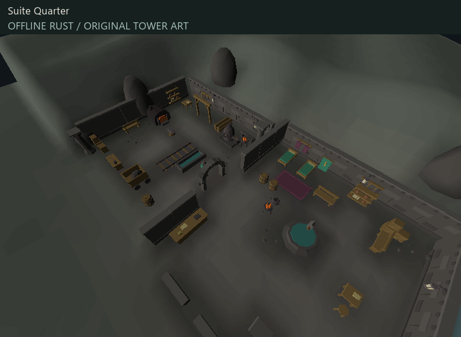
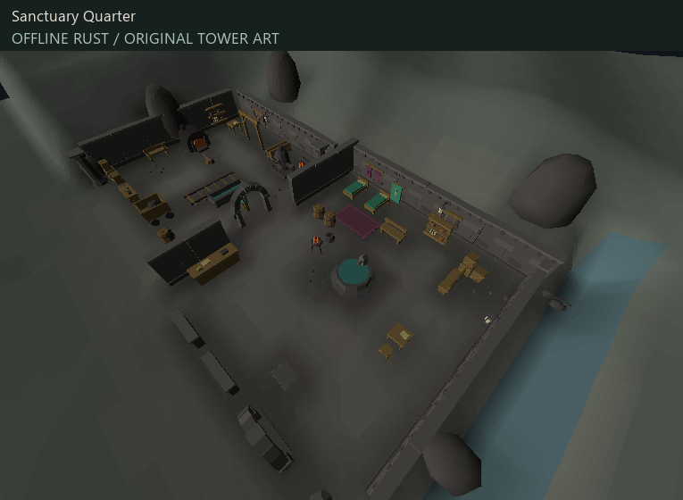
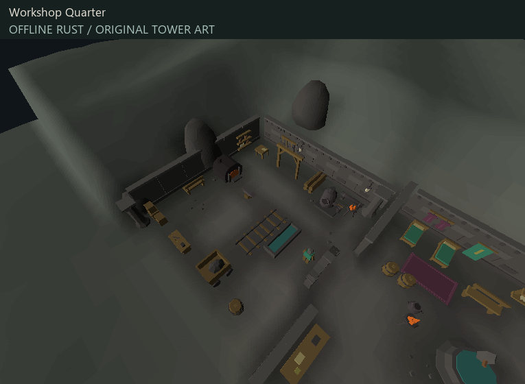
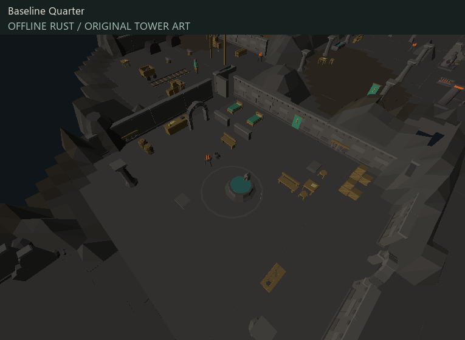
Identical placement records and camera; the terrain material or height layer is changed independently. Raised props naturally follow the altered height field in the height control.
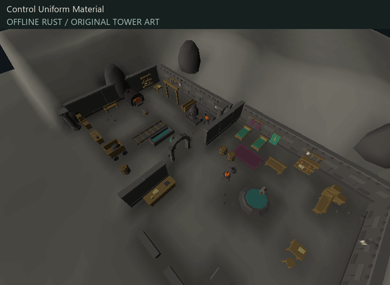
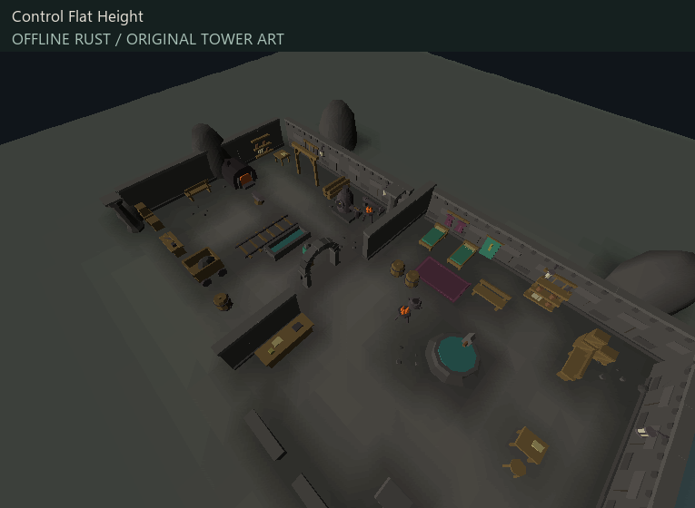
Rejected all-smooth and selective wall experiments. They are preserved as findings, not promoted.
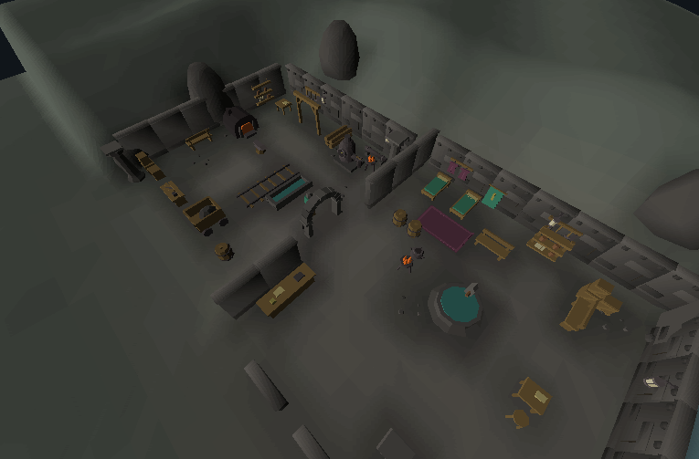
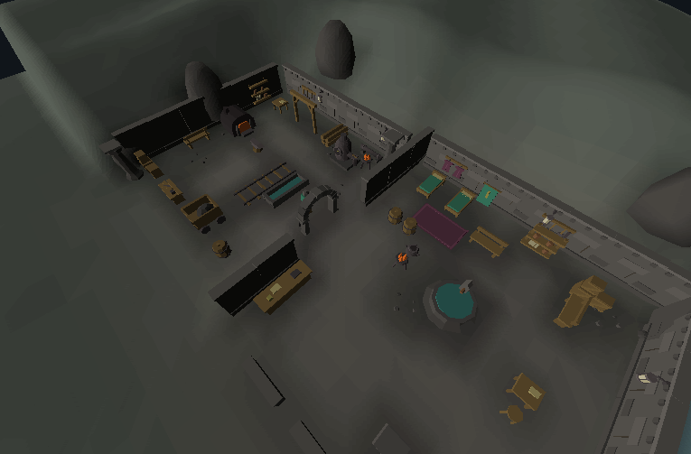
Authentic reference images and extracted geometry remain local. Source-safe scene identifiers, hashes, counts and model IDs are in the inventory.
Native close inspection, separate from the matched gameplay camera.
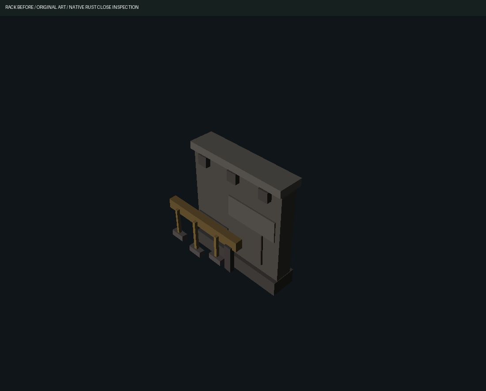
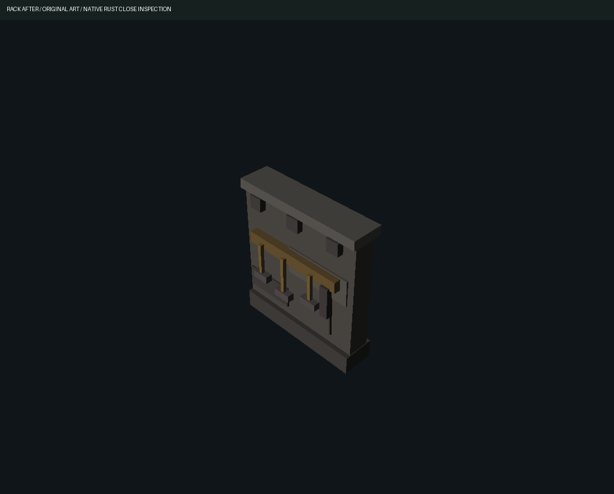
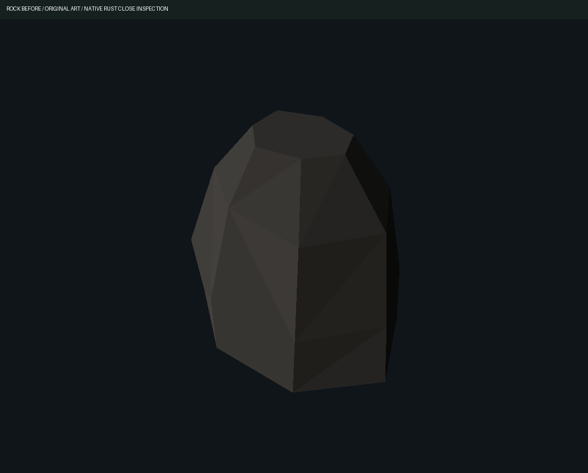
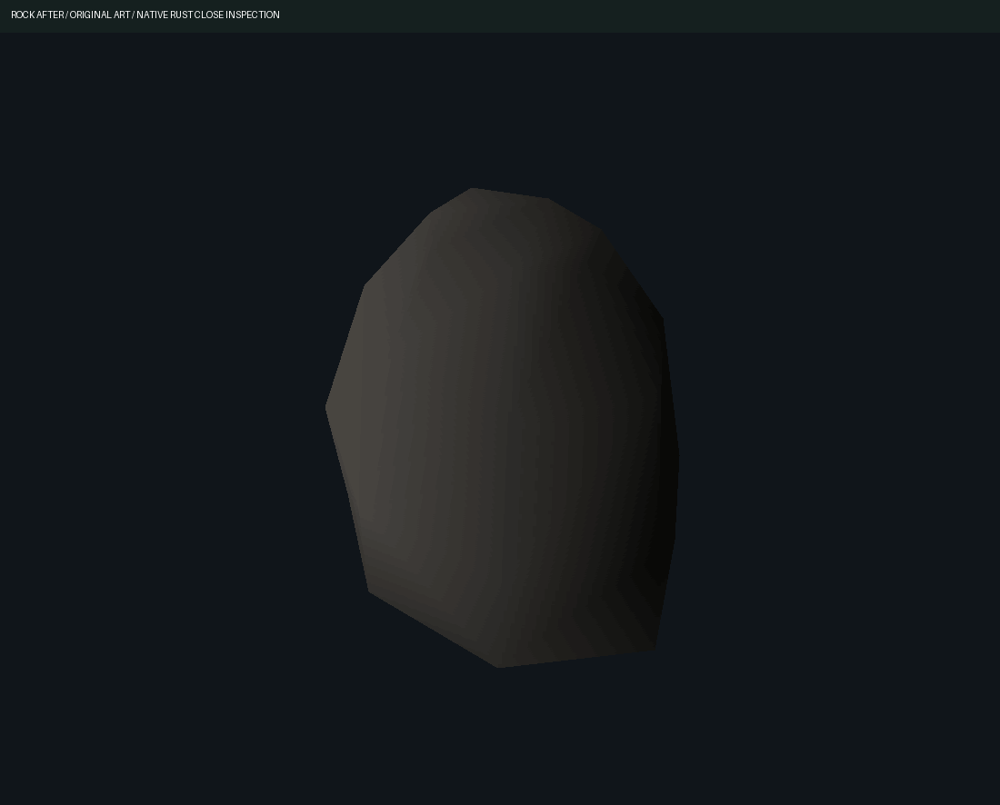